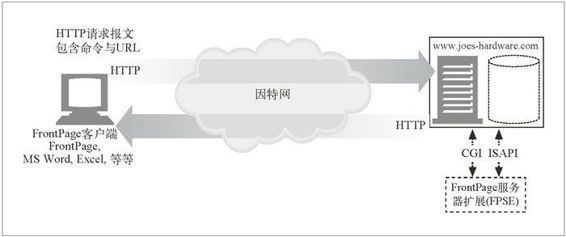
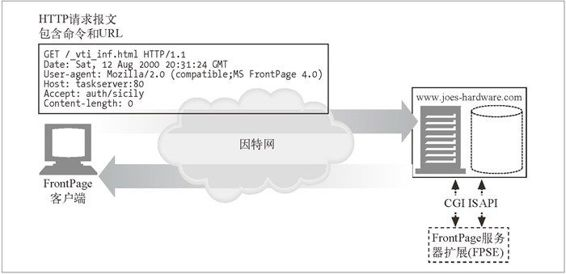

19.1 FrontPage 为支持发布而做的服务器扩展
FrontPage（FP）是微软公司提供的一种通用 Web 写作和发布工具包。FrontPage 的原始创意（FrontPage 1.0）是由维美尔（Vermeer）技术公司在 1994 年构思的，它是首个把网站管理和创建整合进一个统一工具的产品。微软公司 1996 年收购了维美尔公司，发行了 FrontPage 1.1。最新的版本——FrontPage 2002 版，是这条产品线上的第六代，是微软办公套件的核心组成部分。
19.1.1 FrontPage服务器扩展
作为“随处发布”战略的一部分，微软公司发布了一系列服务器端软件，称为“FrontPage 服务器扩展”，（FPSE）。这些服务器端组件和 Web 服务器集成在一起，在网站和运行 FrontPage 的客户端（以及其他支持这些扩展的客户端）之间提供了必要的转接工作。
我们主要关注 FrontPage 客户端和 FPSE 之间的发布协议。该协议是对 HTTP 核心服务进行扩展而无需改变 HTTP 语义的一个设计范例。
FrontPage 的发布协议在 HTTP 的 POST 请求之上实现了一个 RPC（Remote Procedure Call，远程过程调用）层。它允许 FrontPage 客户端向服务器发送命令来更新网站上的文档、进行搜索以及在多个 Web 作者之间进行协作，等等。图 19-1 给出了这个通信过程的概貌。

图 19-1 FrontPage 发布系统体系结构
Web 服务器看到以 FPSE（在非微软 IIS 服务器上就以一组 CGI 程序的方式实现）为接收地址的 POST 请求，就对其进行相应的引导。只要中间的防火墙和代理服务器都配置为允许使用 POST 方法，FrontPage 就能与服务器持续通信。
19.1.2 FrontPage术语表
在我们深入研究 FPSE 定义的 RPC 层之前，先来了解一下其常用术语。
虚拟服务器
在同一服务器上运行的多个网站之一，每个都有唯一的域名和 IP 地址。本质上说，虚拟服务器允许在单一的 Web 服务器上托管多个网站，在浏览器看来每个网站都像是由它自己专门的 Web 服务器托管的一样。支持虚拟服务器的 Web 服务器称为多路托管（multi-hosting）Web 服务器。配置有多个 IP 地址的机器称为多宿主（multi-homed）服务器（参阅 18.2 节以获取更多信息）。
根 Web
Web 服务器默认的顶层内容目录，或者是在多路托管环境下，虚拟 Web 服务器的顶层内容目录。要访问根 Web，只需指定该服务器的 URL，而不需要指定页面名称。每个 Web 服务器只能有一个根 Web。
子 Web
根 Web 的已命名子目录或另一个完全由 FPSE 扩展的子 Web。子 Web 可以是完全独立的实体，能够指定自己的管理和写作权限。此外，子 Web 还能提供方法（比如搜索）的作用范围。
19.1.3 FrontPage的RPC协议
FrontPage 客户端与 FPSE 使用专用的 RPC 协议来通信。该协议构建在 HTTP 的 POST 方法之上，它把 RPC 的方法及其相关的变量嵌入在 POST 请求的主体中。
在开始处理之前，客户端需要知道服务器上目标程序（FPSE 包中能够执行这些 POST 请求的相关部分）的位置和名称。接下来它会发送一个特殊的 GET 请求（参 见图 19-2）。

图 19-2 初始请求
得到返回的文件之后，FrontPage 客户端读取响应，寻找与 FPShtmlScriptUrl、 FPAuthorScriptUrl 以及 FPAdminScriptUrl 相关的值。通常，这些值看起来是这样的：
FPShtmlScriptUrl="_vti_bin/_vti_rpc/shtml.dll"
FPAuthorScriptUrl="_vti_bin/_vti_aut/author.dll"
FPAdminScriptUrl="_vti_bin/_vti_adm/admin.dll"
FPShtmlScriptUrl 告诉客户端要执行“浏览时”命令（例如，获取 FPSE 的版本号）时应向哪里 POST 请求。
FPAuthorScriptUrl 告诉客户端要执行“写作时”命令时应向哪里 POST 请求。类似地，FPAdminScriptUrl 告诉 FrontPage 向哪里发送管理操作的 POST 请求。
现在我们已知道这些程序所在的位置，可以发出请求了。
请求
POST 请求的主体包含 RPC 命令，形式是 method=<command> 及任何需要的参数。例如，请求文档列表的 RPC 报文如下：
POST /_vti_bin/_vti_aut/author.dll HTTP/1.1
Date: Sat, 12 Aug 2000 20:32:54 GMT
User-Agent: MSFrontPage/4.0
..........................................
<BODY>
method=list+documents%3a4%2e0%2e2%2e3717&service%5fname=&listHiddenDoc
s=false&listExplorerDocs=false&listRecurse=false&listFiles=true&listFo
lders=true&listLinkInfo=true&listIncludeParent=true&listDerived=false
&listBorders=false&listChildWebs=true&initialUrl=&folderList=%5b%3bTW%
7c12+Aug+2000+20%3a33%3a04+%2d0000%5d
POST 方法的主体中含有发送给 FPSE 的 RPC 命令。与 CGI 程序一样，方法中的空格被编码为加号（+）字符。所有其他非字母数字的字符都被编码为 %XX 格式，XX 表示该字符的 ASCII 码。根据这种记号方式，更容易辨识的主体版本如下所示：
method=list+documents:4.0.1.3717
&service_name=
&listHiddenDocs=false
&listExplorerDocs=false
.....
其中某些元素的含义如下所述。
service_name
方法应该在该 URL 表示的网站上执行。必须是已有文件夹或者已有文件夹的下层文件夹。
listHiddenDocs
如果值为 true，就显示网站中隐藏的文档。所谓“隐藏”是指其 URL 的路径部分以“_”开头。
listExploreDocs
如果值为 true，就列出任务列表。
响应
大多数 RPC 协议方法都有返回值。大多数常见的返回值都用来表示方法成功和各种错误。有些方法还有第三种类别的返回值，称为“采样返回码”。FrontPage 会对这些代码进行适当的解释，为用户提供准确的反馈。
继续讨论前面的例子，FPSE 处理这个 listdocuments 请求并返回必须的信息。示例响应如下：
HTTP/1.1 200 OK
Server: Microsoft-IIS/5.0
Date: Sat, 12 Aug 2000 22:49:50 GMT
Content-type: application/x-vermeer-rpc
X-FrontPage-User-Name: IUSER_MINSTAR
<html><head><title>RPC packet</title></head>
<body>
<p>method=list documents: 4.0.2.3717
<p>document_list=
<ul>
<li>document_name=help.gif
<\ul>
可以从响应中看到，Web 服务器上可用文档的列表返回给了 FrontPage 客户端。在微软公司的网站上可以找到各种命令和响应的完整列表。
19.1.4 FrontPage的安全模型
任何直接访问 Web 服务器内容的发布系统都要非常注意其行为的潜在安全影响。FPSE 在极大程度上是依赖 Web 服务器来提供安全性的。
FPSE 安全模型定义了 3 种用户：管理员、作者以及浏览者，其中管理员拥有完全控制权。所有权限都是累积的，也就是说，所有的管理员都能编写和浏览 FrontPage 的网站。类似地，所有作者都有浏览权限。
对于给定的由 FPSE 扩展的网站，管理员、作者以及浏览者的列表都要定义好。所有的子 Web 可以从根 Web 继承权限，也可以自行定义。对于非 IIS 的 Web 服务器，所有的 FPSE 程序都要保存在标记为“可执行”的目录中（所有其他 CGI 程序也都有同样的限制）。Fpsrvadm，FrontPage 的服务器管理员实用工具，可以用来进行这种工作。在 IIS 服务器上，则可用 Windows 操作系统自身集成的安全模型。
在非 IIS 服务器上，Web 服务器的访问控制机制负责指定能够访问指定程序的用户。在 Apache 和 NCSA 的 Web 服务器上，访问控制文件名为 .htaccess；在 Netscape 服务器上，文件名是 .nsconfig。访问控制文件将用户、用户组以及 IP 地址与不同级别的权限关联起来：GET 是读权限，POST 是写权限，等等。例如，为了使用户在 Apache 的 Web 服务器上具有作者权限，.htaccess 文件应当允许该用户对 author.exe 进行 POST。这些访问规范文件常常是以目录为单位来定义的，这为权限定义提供了极大的灵活性。
在 IIS 服务器上，权限是通过给定根 Web 目录或子 Web 的根目录上的 ACL（Access Control List，访问控制列表）来制定的。当 IIS 收到请求时，首先登录，并模拟用户，接着发送请求到上述三个 DLL（Dynamic Link Library，动态链接库）之一。收到请求的 DLL 根据目标文件夹上定义的 ACL 检查所扮演用户的证书。如果检查通过，请求的操作就由扩展 DLL 来执行。否则，就向客户端发回“permission denied”（没有权限）报文。由于 IIS 和 Windows 操作系统的安全管理紧密集成在一起，所以可以使用用户管理器进行细粒度的控制。
尽管有着精密的安全模型，启用 FPSE 还是背负了带来显著安全风险的恶名。在多数情况下，这是由于网站管理员的粗心大意引起的。然而，早期版本的 FPSE 的确有严重的安全漏洞，从而引起了这种安全风险的担忧。完整地实现严密的安全模型困难重重，也加剧了这种担忧。